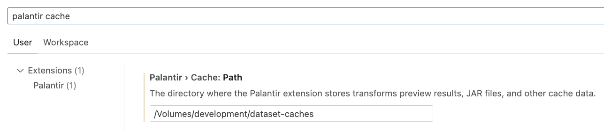
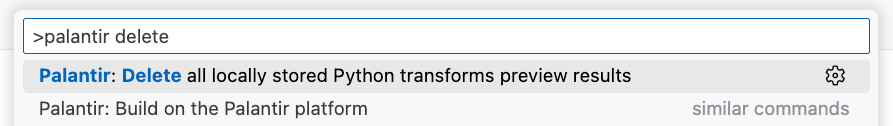

The best way to ensure no data leaves the platform during transforms preview is to execute it within VS Code workspaces. With this approach, no data is sent directly to your machine.
Local development may be preferred over VS Code workspaces when using certain third-party tools, libraries, and extensions. Transforms preview is possible when using the Palantir extension for VS Code in local development. However, local preview might only be enabled for a subset of users due to the data security implications of streaming parts of datasets into the system memory of a user's machine to locally execute the previewed pipeline's logic.
Users with Download operations on a dataset are allowed to export that dataset through the Foundry API. It is best practice to grant the Download operation with caution. Review the relevant section of download controls for details. Running a transforms preview locally requires the Download operation on all input datasets (and outputs in the case of incremental transforms).
Additionally, a platform administrator must enable local preview in the Code Repositories settings page in Control Panel. Local preview is only possible when both conditions are satisfied. This ensures local preview cannot be used to elevate any users' permissions on datasets.
During preview, no input datasets are stored on disk. Preview Engine sets up an S3 connection to Foundry using Foundry's S3 compatible API. This implementation results in each local preview producing events tracked in audit logs for full visibility.
PySpark (for legacy transforms) or Polars (for lightweight transforms) then streams the required parts of the datasets into memory. The subset of the data streamed is determined by the code-defined input filters you chose and the previewed pipeline's logic. All caching during preview execution resides in system memory.
At the end of a preview invocation, at most 10000 rows of the resulting output datasets written by the transform are stored in a cache folder to enable displaying them in VS Code's Preview table. You can set the location of this cache folder in the Palantir extension's settings under the Palantir > Cache: Path key.

The result caches are kept for as little time as necessary while maintaining the Palantir extension's features. The result caches are deleted:
Additionally, you can manually delete the caches by calling the Delete all locally stored Python transforms preview results command in the command palette. The command can be assigned to a keybinding through the palantir.transforms.datasets.cleanUp identifier as well.

The data residency features of secure streaming local preview described above aim to prevent accidental and unintentional data exfiltration. These features are not meant to, and cannot prevent intentional abuse.
For example, there is no mechanism for stopping users from deliberately writing data to any folder on their machines during preview execution. Users who have the Download operation on a dataset are expected to exercise reasonable judgment when handling said datasets both when using Foundry's public data access endpoints and when executing local preview.
For technical setup instructions for local preview, review our documentation on previewing transforms in local development.